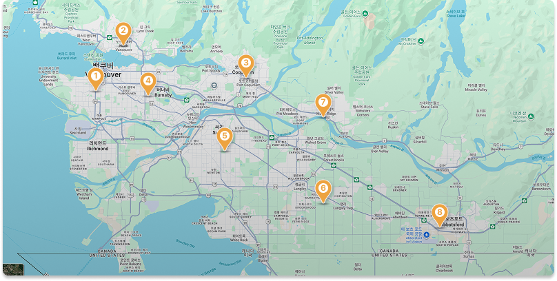

캐나다 유학의 주요 장점
북미 표준 영어
명확한 발음과 국제적으로 인정받는 영어 교육 환경.
안전하고 체계적인 교육시스템
학업뿐 아니라 생활 전반의 안정성을 보장.
ELL(English Learning Support)
영어가 모국어가 아닌 학생도 빠르게 적응하도록 지원.
진정한 글로벌 환경
100여 개국의 학생들과 함께 배우는 다문화 경험.
포용적 사회 분위기
차별이 적고 다양한 문화를 존중하는 분위기.
합리적인 유학 비용
다른 영어권 대비 경제적인 학비와 생활비.
공립학교 무상교육
부모가 정부 인가 대학 재학 또는 워크퍼밋 보유 시 자녀 수와 관계없이 무상 공립 교육 가능
부모 동반 비자
미성년 국제학생 유학 시 부모 Visitor 비자 발급.
간소한 비자 절차
대면 인터뷰 없이 서류 심사 중심으로 진행.
한국과 가까운 영어권
인천–밴쿠버 직항 약 10시간.
밴쿠버, 최고의 유학 선택
온화한 기후·아름다운 자연환경·쾌적한 생활환경을 갖춘 밴쿠버는 캐나다에서 가장 살기 좋은 도시 중 하나로 꼽힙니다. 메트로 밴쿠버는 버나비·코퀴틀람·써리·랭리·메이플릿지 등으로 구성되며, 각 교육청이 국제학생 전형을 독립 운영합니다.

밴쿠버와 메트로밴쿠버를 Google Map에서 보여주며 각 교육청별 구역을 표기
교육청 범례
벤쿠버 교육청 (VSB)
노스밴쿠버
코퀴틀람
버나비
써리
랭리
 메이플릿지·핏미도우
메이플릿지·핏미도우
아보츠포드
밴쿠버 교육청 (VSB)
- UBC 인근 최상급 교육환경
- 다운타운 접근 용이, 공원·바닷가 인접
- 과정: Gr.1–7 / Gr.8–12
노스밴쿠버
- 스키장 인접, 자연환경 우수
- 안전·학업 성취도 높음
- 과정: Gr.1–7 / Gr.8–12
코퀴틀람
- 대규모 학군, 한인 편의시설 풍부
- 예체능·스포츠 활발
- 학제: Gr.1–5 / Gr.6–8 / Gr.9–12
버나비
- IB·AP 강세, 인프라 우수
써리
- BC 최대 학군, 프로그램 다양
- South Surrey/White Rock 생활 편의 우수
랭리
- 쾌적·안정 지역, 영어 몰입 유리
- 학제: Gr.1–5 / Gr.6–8 / Gr.9–12
메이플릿지·핏미도우
- 전원적·합리적 주거 비용, 액티비티 풍부
아보츠포드
- 안전한 소도시, 생활비 합리적
- 관리형/홈스테이 유학 적합
밴쿠버 사립/보딩스쿨 vs 공립학교 School District 입학 절차 비교
캐나다 유학의 두 가지 주요 진학 경로인 사립·보딩스쿨과 공립학교(School District)는 입학 절차, 준비 기간, 비용, 교육 환경에서 차이가 있습니다.
자녀의 학업 목표·예산·생활 방식에 맞춰 선택하세요.
| 구분 | 사립/보딩스쿨 | 공립학교 School District |
|---|---|---|
| 입학 시기 | 9월 학기 시작, 일부 1–2월 소규모 전형 가능 | 9월 학기 중심, 일부 교육청은 1-2월 소규모 입학 가능 |
| 지원시기 |
전년도 9월부터 원서접수 시작 선착순 인기 학교는 1년 전 조기 마감 가능 |
전년도 10월 접수 시작 선착순 Early bird 지원자 우선 배정 |
| 전형요소 |
필수: 최근 2년 성적표, 예방접종 기록, 여권 외 제출 필수 추가: 에세이, 영어시험, 인터뷰 진행은 학교별 상이 |
필수: 최근 2년 성적표, 예방접종 기록, 여권 외 제출 필수 입학 확정 후 교육청별 영어 레벨 테스트 진행, 인터뷰, 라이팅은 입학 후 일부 학교 진행 |
| 입학결정 | 지원 후 약 2주 이내 합격 여부 결정, LOA 입학허가서 발급 |
지원 후 수 주 내 배정 통보, LOA 발급 (희망 3지망 내에서 교육청이 공식 현황에 맞춰 학교 지정) |
| 학비납부 |
입학금+학비: 연간 CAD 18,000-40,000 명문 보딩 스쿨: 국제학생은 기숙사 포함 $70,000~$90,000 |
학비: 연간 CAD 15,000-$18,000, 교육청별 차이 있음 |
| 비자신청 | LOA+ 학비 납부 영수증 필요 | LOA+ 학비 납부 영수증 필요 |
| 교육환경 |
천주교·기독교 계열 초등학교: 가족적인 분위기 수업별 보조교사 2명 지원, 선생님별 차이 없게 체계적 교육관리 사립 중·고등학교: IB, AP 과정, 대학 진학 지향적 커리큘럼 다양한 액티비티 제공 |
일반적으로 교사:학생 비율 1:25 내외 공립 초등학교는 수업별 1분의 보조 선생님 참여 English Learning Support(ESL) 프로그램 제공 (학교별 상이) French Immersion 과정은 현지 학부모들 사이에 인기 |
| 준비기간 | 최소 9-12개월 전 준비 필요 | 6-9개월 전 준비 가능 |
| 특징 | 높은 명문대 진학률, 다양한 방과 후 프로그램, 글로벌 네트워크 | 상대적으로 비용 효율적, 홈스테이를 통한 현지 문화 체험, 캐나다 공교육 시스템 직접 경험 가능 |
우리 아이에게 맞는 트랙은?
사립/보딩 vs 공립 비교 상담으로 예산·목표·생활방식에 맞는 최적의 로드맵을 제안드립니다.